News
2023
| Date |
Event |
Category |
| 09/08 |
Bo-Yong Lin, Kung-Bin Sung, Cho-Ying Huang, “Multi-channel Sun-induced Chlorophyll Fluorescence Optical Metrology,” Information Photonics 2023, poster 250084, New Taipei City, Taiwan (Sep. 8, 2023). |
Conference |
| 09/08 |
Chien-Jung Chiu, Chi-Hsiang Chuang, Kung-Bin Sung, “Quantifying optical parameters of human head tissues with diffuse reflectance spectroscopy and fast surrogate models for Monte Carlo simulations,” Information Photonics 2023, poster 250085, New Taipei City, Taiwan (Sep. 8, 2023). |
Conference |
| 09/08 |
Ying-Ju Tsai, Sunil Vyas, Kung-Bin Sung, Yuan Luo, “Electrical field Monte Carlo simulation of Bessel beam propagation in turbid media,” Information Photonics 2023, poster 250087, New Taipei City, Taiwan (Sep. 2023). |
Conference |
| 09/08 |
Hao-Wei Lee, Kung-Bin Sung, “Quantifying Optical Properties of Muscle and Superficial Tissues In Vivo by Monte Carlo-based Fitting of Diffuse Reflectance Spectra,” Information Photonics 2023, poster 250087, New Taipei City, Taiwan (Sep. 2023). |
Conference |
| 04/21 |
Kung-Bin Sung, Tzu-Chia Kao, Chien-Jung Chiu, Yu-Wun Wu, Yu-Peng Hsieh, Andy Ying-Chi Liao, Li-Da Huang, “Optimizing transcranial infrared light stimulation for cognitive function enhancement: near-infrared spectroscopy approaches,“ in Optics & Photonics International Congress: Biomedical Imaging and Sensing Conference (BISC) 2023, Yokohama, Japan (Apr. 21, 2023). |
Invited talk |
| 01/30 |
Huai-Ching Hsieh, Yi-Ju Lee, Kung-Bin Sung, and An-Chi Wei, “Long-term photobiomodulation of cellular and mitochondrial activities in IMR-32 cells using an 810 nm light-emitting diode,” IEEE Journal of Selected Topics in Quantum Electronics, 29(4), 7000410 (Jan. 2023). |
Publication |
| 01/30 |
Huai-Ching Hsieh, Kung-Bin Sung. "Contrast-enhanced spatial light interference microscopy for selective imaging of granules in live cells," SPIE Photonics West 2023, poster 12389-52, San Francisco, California (Jan. 30, 2023). |
Conference |
| 01/29 |
Hao-Wei Lee, Hsin-Yuan Hsieh, Yi-Siang Syu, Yin-Fu Chen, Kuang Yang, Kung-Bin Sung, “Quantifying Optical Parameters of Human Muscle and Superficial Tissue In-Vivo by Diffuse Reflectance Spectroscopy in the Wavelength Range of 700-880 nm,” SPIE Photonics West, poster 12370-19, San Francisco, California (Jan. 29, 2023). |
Conference |
| 01/28 |
Hsin-Yuan Hsieh, Chin-Hsuan Sun, Yi-Siang Syu, Yin-Fu Chen, Hao-Wei Lee, Kuang Yang, Kung-Bin Sung, “Non-invasive quantification of changes in blood oxygen saturation of the internal jugular vein: theoretical evaluation and in-vivo demonstration,“ SPIE Photonics West 2023, oral 12370-15, San Francisco, California (Jan. 28, 2023). |
Conference |
| 01/28 |
Chien-Jung Chiu, Yu-Wun Wu, Li-Da Huang, Francisco Gonzalez-Lima, Andy Ying-Chi Liao, Chi-Hsiang Chuang, Kung-Bin Sung, “Influence of long-term transcranial infrared light stimulation on the hemodynamic response of the prefrontal cortex during cognitive activities,” SPIE Photonics West 2023, oral 12362-19, San Francisco, California (Jan. 28, 2023). |
Conference |
| 01/28 |
Huai-Ching Hsieh, Yi-Ju Lee, Kung-Bin Sung, An-Chi Wei. "Long-term effects of photobiomodulation: mitochondrial and cellular activities of IMR-32 cells using an 810 nm light-emitting diode," SPIE Photonics West 2023, oral 12362-14, San Francisco, California (Jan. 28, 2023). |
Conference |
2022
| Date |
Event |
Category |
| 12/16 |
Hao-Wei Lee, Kung-Bin Sung, “Evaluation of Monte Carlo-based Fitting of Diffuse Reflectance Spectroscopy to Quantify Optical Properties of Muscle and Superficial Tissues,” SPIE Biomedical Imaging and Sensing Conference (BISC) 2022, poster 250453, Taipei, Taiwan (Dec. 16, 2022). |
Conference |
| 12/16 |
Chin-Hsuan Sun, Kung-Bin Sung, “Perturbation Monte Carlo Applicability for Human Neck Model,” SPIE Biomedical Imaging and Sensing Conference (BISC) 2022, poster 250405, Taipei, Taiwan (Dec. 16, 2022). |
Conference |
| 12/04 |
Invited talk - Prof. Kung-Bin Sung, “Non-invasive optical sensing of pathological and physiological parameters from tissue in-vivo,” Optics & Photonics Taiwan, International Conference (OPTIC) 2022, Tau-Yuan, Taiwan (Dec. 4, 2022). |
Conference |
| 11/01 |
Shin-Shyang Huang, Yang-Hsien Lin, Shang-Ju Wu, and Kung-Bin Sung, “Specific refraction-index increments of oxygenated hemoglobin from thalassemia-minor patients are not significantly different than those from healthy individuals,” Applied Optics, 61(32), 9334-9341, Nov. 2022 |
Publication |
| 08/22 |
Tzu-Chia Kao and Kung-Bin Sung, “Quantifying tissue optical properties of human heads in-vivo using continuous-wave near-infrared spectroscopy and subject-specific three-dimensional Monte Carlo models,” Journal of Biomedical Optics, 27(8), 083021, Aug. 2022 |
Publication |
| 06/13 |
Guo-Sheng Lin, Shih-Cheng Tu, Chong-Ian Mok, Tsan-Hsueh Huang, Chi-Hau Chen, Lin-Hung Wei, and Kung-Bin Sung, “Non-Invasive Quantification of Layer-Specific Intrinsic Fluorescence From Mucosa of the Uterine Cervix Using Monte-Carlo-Based Models,” Frontiers in Physics, 10, 865421, Jun. 2022 |
Publication |
| 04/28 |
Huai-Ching Hsieh, Po-Ting Lin, and Kung-Bin Sung, “Characterization and identification of cell death dynamics by quantitative phase imaging,” Journal of Biomedical Optics, 27(4), 046502, Apr. 2022 |
Publication |
| 04/21 |
Ali Afshari, Rolf B. Saager, David Burgos, William C. Vogt, Jianting Wang, Gonzalo Mendoza, Sandy Weininger, Kung-Bin Sung, Anthony J. Durkin, and T. Joshua Pfefer, “Evaluation of the robustness of cerebral oximetry to variations in skin pigmentation using a tissue-simulating phantom,” Biomedical Optics Express, 13(5), 2909-2928, Apr. 2022 |
Publication |
| 01/28 |
Shih-Chung Wei, Chia-Chen Chang, Tsung-Liang Chuang, Kung-Bin Sung, and Chii-Wann Lin, “Rapid Detection of Virus Nucleic Acid via Isothermal Amplification on Plasmonic Enhanced Digitizing Biosensor,” Biosensors, 12(2), 75, Jan. 2022 |
Publication |
2021
| Date |
Event |
Category |
| 04/19 |
Invited talk - Kung-Bin Sung, “Toward quantitative dosage analysis of transcranial photobiomodulation with near-infrared light,” OPTICS & PHOTONICS International Congress 2021, oral BISC-Satellite-11(Invited), Mon. Apr. 19 2021 4:15 PM - 4:45 PM. |
Conference |
| 04/19 |
Yu-Peng Hsieh, Tzu-Chia Kao, Kung-Bin Sung, “Non-invasive quantification of the photon fluence rate in the prefrontal cortex for transcranial photobiomodulation (tPBM),” OPTICS & PHOTONICS International Congress 2021, poster BISC-P-06, Apr. 19-22 2021. |
Conference |
| 04/19 |
Ying-Ju Tsai, Sunil Vyas, Yuan Luo, Kung-Bin Sung, “Mueller matrix calculation using Electric field Monte Carlo simulation,” OPTICS & PHOTONICS International Congress 2021, poster BISC-P-12, Apr. 19-22 2021. |
Conference |
| 04/19 |
Guo-Sheng Lin, Chong Ian Mok1, Kung-Bin Sung, “Two-Step Curve Fitting Combined with a Two-Layered Tissue Model to Quantify Intrinsic Fluorescence of Cervical Mucosal Tissue in Vivo,” OPTICS & PHOTONICS International Congress 2021, poster BISC-P-05, Apr. 19-22 2021. |
Conference |
| 04/12 |
Huai-Ching Hsieh, Po-Ting Lin, Kung-Bin Sung, “Identification of Cell Death by Quantitative Phase Imaging,” OSA Biophotonics Congress: Optics in the Life Sciences, oral DM1A.2, Apr. 12 2021 5:30 - 5:45 (GMT - 07:00). |
Conference |
| 01/14 |
Li-Da Huang, Tzu-Chia Kao, Kung-Bin Sung, and Jacob A. Abraham, “Simulation study on the optimization of photon energy delivered to the prefrontal cortex in low-level-light therapy using red to near-infrared light,” IEEE Journal of Selected Topics in Quantum Electronics, 27(4), 1-10, Jan. 2021 |
Publication |
2020
| Date |
Event |
Category |
| 11/01 |
Yang-Hsien Lin, Ken Y.-K. Liao, Kung-Bin Sung, “Automatic detection and characterization of quantitative phase images of thalassemic red blood cells using a mask region-based convolutional neural network,” Journal of Biomedical Optics, 25(11), 116502, Nov. 2020 |
Publication |
| 05/11 |
Chi-Kuang Sun, Pei-Jhe Wu, Sheng-Tse Chen, Yu-Hsiang Su, Ming-Liang Wei, Chiao-Yi Wang, Hao-Cheng Gao, Kung-Bing Sung, Yi-Hua Liao, “Slide-free clinical imaging of melanin with absolute quantities using label-free third-harmonic-generation enhancement-ratio microscopy,” Biomedical Optics Express, 11(6), 3009-3024, May 2020 |
Publication |
| 04/20 |
Invited talk - Kung-Bin Sung, “Quantitative phase imaging and the application of deep learning on processing and analyzing such images,” Information Photonics 2020, Taipei, Taiwan (Sep. 12, 2020). |
Conference |
| 02/03 |
Yang-Hsien Lin, et al., “Retrieval of red blood cell 3-D shape from single-shot quantitative phase image,” SPIE Photonics West, San Francisco, California (Feb. 01 - Feb. 06, 2020). |
Conference |
| 02/02 |
Shih-Cheng Tu, et al., “Building and validating a data processing pipeline for extracting the central venous oxygen saturation,” SPIE Photonics West, San Francisco, California (Feb. 01 - Feb. 06, 2020). |
Conference |
2019
| Date |
Event |
Category |
| 08/05 |
Chao-Mao Hsieh, Patricia Yang Liu, Lip Ket Chin, Jing Bo Zhang, Kuan Wang, Kung-Bin Sung, Wee Ser, Tarik Bourouina, Yamin Leprince-Wang, Ai-Qun Liu, “Regulation of lipid droplets in live preadipocytes using optical diffraction tomography and Raman spectroscopy,” Optics Express, 27(16), 22994-23008, Aug. 2019 |
Publication |
| 05/30 |
Chiao-Yi Wang, Tzu-Chia Kao, Yin-Fu Chen, Wen-Wei Su, Hsin-Jou Shen, Kung-Bin Sung, “Validation of an Inverse Fitting Method of Diffuse Reflectance Spectroscopy to Quantify Multi-Layered Skin Optical Properties,” Photonics, 6(2), 61, May 2019 |
Publication |
2018
| Date |
Event |
Category |
| 04/20 |
New publication：“Hybrid method to estimate two-layered superficial tissue optical properties from simulated data of diffuse reflectance spectroscopy,” Applied Optics, 57(12):3038-3046, Apr. 2018 |
Publication |
| 04/01 |
New publication：“Modelling spatially-resolved diffuse reflectance spectra of a multi-layered skin model by artificial neural networks trained with Monte Carlo simulations,” Biomedical Optics Express, 9(4): 1531-1544, Apr. 2018 |
Publication |
2017
| Date |
Event |
Category |
| 12/03 |
New publication：“Morphometric Analysis of Erythrocytes from Patients with Thalassemia using Tomographic Diffractive Microscopy,” Journal of Biomedical Optics, 22(11):1-11, Nov. 2017 |
Publication |
| 11/23 |
Chiao-Yi Wang, et al., “Developing visible and near-infrared reflectance spectroscopy to detect changes of the dermal collagen concentration,” and “In-vivo measurements of optical properties of human muscles with visible and near infrared reflectance spectroscopy,” SPIE Photonics West, San Francisco, California (Jan. 27 - Feb. 01, 2018). |
Conference |
| 11/08 |
Yang-Hsien Lin, et al., “Phase Reconstruction on Digital Holographic Microscopy with NVIDIA Jetson TX2,” NVIDIA GTC Japan 2017, Tokyo, Japan (Dec. 12-13, 2017). |
Conference |
| 06/26 |
Received the “MOST Innovative Medical Device Flagship Grant,” starting from May 1, 2017 |
Grant |
| 05/24 |
Chiao-Yi Wang, et al., “Sensitivity Analysis for Detecting Oxygen Saturation of Deep Veins with Non-invasive Near Infrared Spectroscopy,”The 39th Annual International Conference of the IEEE Engineering in Medicine and Biology Society (EMBC’17), in conjunction with International Biomedical Engineering Conference of KOSOMBE, will be held at International Convention Center (ICC), Jeju Island, Korea (Jul. 11-15, 2017). |
Conference |
| 05/07 |
Yang-Hsien Lin, et al., “GPU Implementation of 3-D Refractive Index Reconstruction in Common-path Tomographic Diffractive Microscopy,” NVIDIA GPU Technology Conference 2017, San Jose, CA, United States (May. 08-11, 2017). |
Conference |
| 04/25 |
Invited talk - Kung-Bin Sung, et al.,“Fast profiling of three-dimensional refractive index maps of white blood cells,” The 7th International Multidisciplinary Conference on Optofluidics, Singapore (Jul. 25-28, 2017). |
Conference |
| 04/20 |
Kung-Bin Sung, et al.,“Investigation of light scattering characteristics of individual leukocytes using three-dimensional refractive index maps,” Biomedical Imaging and Sensing Conference (BISC), Yokohama, Japan (Apr. 20, 2017). |
Conference |
| 03/27 |
New collaborative research project with Apacer Technology Inc. |
Collaboration |
| 01/17 |
Invited talk - Kung-Bin Sung, et al.,“Quantification of Tissue Optical Properties in-vivo from Reflectance and Fluorescence Spectra using Multi-layered Monte Carlo tissue models,” The 10th International Conference on Computational Physics, Macau, China (Jan. 17, 2017). |
Conference |
2016
| Date |
Event |
Category |
| 11/15 |
實驗室碩士生黃贊學將代表實驗室於「Japan-Taiwan Medical Spectroscopy International Symposium/ 14th Annual Meeting of the Japan Association of Medical Spectroscopy」發表研究成果。
題目：Probe pressure effects on the diffuse reflectance spectroscopy of invivo oral mucosa from normal volunteers |
Conference |
| 11/15 |
實驗室碩士生林豐正將代表實驗室於「Japan-Taiwan Medical Spectroscopy International Symposium/ 14th Annual Meeting of the Japan Association of Medical Spectroscopy」發表研究成果。
題目：A method to fix white blood cells avoid suspension and Using common-path tomographic diffractive microscopy to analysis and identify WBCs |
Conference |
| 11/15 |
實驗室碩士生俞婷文將代表實驗室於「Japan-Taiwan Medical Spectroscopy International Symposium/ 14th Annual Meeting of the Japan Association of Medical Spectroscopy」發表研究成果。
題目：Validating a GPU-based inverse fluorescence Monte Carlo method by two-fluorophore phantoms |
Conference |
| 11/12 |
宋孔彬教授受邀於「International Workshop on Holography and related technologies (IWH2016)」演講
演講題目：Common-path Tomographic Phase Microscopy for Studying the Morphology and Light Scattering Properties of Blood Cells
時間：Nov. 11-13, 2016
地點：Just Sleep Jiaoxi, Yilan, Taiwan |
Conference |
| 09/21 |
實驗室博士生林仰賢代表實驗室於「NVIDIA GTC Taiwan 2016」發表研究成果。
題目：GPU Acceleration of Phase Retrieval in Common-path Tomographic Diffractive Microscopy 榮獲海報競賽冠軍 |
Award
Conference |
| 07/20 |
宋孔彬教授受邀於「The 6th International Multidisciplinary Conference on Optofluidics」演講
演講題目：Three-dimensional Refractive-index Microscopy for Live-cell Imaging
時間：July 24-27, 2016
地點：Park Plaza Beijing Science Park, Beijing, China |
Conference |
| 02/29 |
實驗室博士生廖英淇將代表實驗室於「2016 OSA Biomedical Optics Congress」發表研究成果。
題目：Simulation Study on Optimal Probe Numerical Aperture for Diffuse Reflectance Spectroscopy |
Conference |
| 02/29 |
實驗室碩士生葛凡華將代表實驗室於「2016 OSA Biomedical Optics Congress」發表研究成果。
題目：In-vivo diffuse reflectance spectroscopy (DRS) of oral mucosa of normal volunteers |
Conference |
| 02/29 |
實驗室碩士生俞婷文將代表實驗室於「2016 OSA Biomedical Optics Congress」發表研究成果。
題目：Extracting Fluorescence Efficiency with a GPU-Based Monte Carlo Model for Two-Layer Mucosal Tissue 榮獲OSA Student Traveling Grant |
Award
Conference |
2015
| Date |
Event |
Category |
| 10/01 |
New publication：“Precancerous esophageal epithelia are associated with significantly increased scattering coefficients,” Biomedical Optics Express, 6(10):3795-3805, Oct. 2015 |
Publication |
| 03/24 |
實驗室碩士生蕭逸嫻將代表實驗室於「2015 SPIE European Conferences on Biomedical Optics」發表研究成果。
題目：Development of a movable diffuse reflectance spectroscopy system for clinical study of esophageal precancer 榮獲2nd Prize of Best Student Poster Award |
Conference |
| 02/01 |
New publication：“Tip-enhanced fluorescence with radially polarized illumination for monitoring loop-mediated isothermal amplification on Hepatitis C virus cDNA,” Journal of Biomedical Optics, 20(2), 027005, Feb. 2015 |
Publication |
2014
| Date |
Event |
Category |
| 10/30 |
宋孔彬教授受邀於「第一屆日本醫學光譜協會與台大分子生醫影像研究中心聯合國際研討會Biomedical Molecular Imaging 2014」演講
演講題目：Diffuse reflectance spectroscopy for in-vivo detection of epithelial precancers
時間：10:30 - 10:50, November 7, 2014
地點：Spa Spring Resort, Beitou, Taipei, Taiwan |
Conference |
| 07/17 |
New publication：“Accurate extraction of optical properties and top layer thickness of two-layered mucosal tissue phantoms from spatially resolved reflectance spectra,” Journal of Biomedical Optics, 19(7), 077002, Jul. 2014 |
Publication |
| 07/17 |
New publication：“Investigation of influences of the paraformaldehyde fixation and paraffin embedding removal process on refractive indices and scattering properties of epithelial cells,” Journal of Biomedical Optics, 19(7), 075007, Jul. 2014 |
Publication |
| 07/17 |
New publication：“Tomographic diffractive microscopy of living cells based on a common-path configuration,” Optics Letters, 39(7), 2210-2213, Mar. 2014 |
Publication |
| 03/23 |
實驗室碩士生謝弘柏將代表實驗室於「2014 SPIE Photonics Europe」發表研究成果。題目：Construct a new method accurately extracting parameters associate with absorption and scattering coefficients of epithelium and stroma: using perpendicular and oblique fiber bundle probes |
Conference |
| 02/19 |
宋孔彬教授受邀於「Japan Taiwan Bilateral Conference on Biomedical and Plasmonic Imaging 」演講題目：3D refractive index mapping of living cells 時間：2014/02/26 地點：臺灣大學 生物科技館 214 室 |
Conference |
2013
| Date |
Event |
Category |
| 11/08 |
Congratulation! 陳錫勳同學獲得 102 年度生醫電資所第三屆獎勵研究創新得獎 - 最佳碩士論文獎 |
Award |
| 10/29 |
研究論文Digital holographic microtomography for high-resolution refractive index mapping of live cells (Journal of Biophotonics, 2013)收錄於Global Medical Discovery的Key Scientific Articles。 |
Publication |
| 10/11 |
實驗室博士生蘇璟瑋將代表實驗室於「2014 Biomedical Optics Conference, SPIE Photonics West」發表兩篇研究成果。
1. 題目：Investigation of the correlation between acetic acid-induced structural changes and backscattering of epithelial cells based on three-dimensional refractive index distributions of living cells (2 February 2014)
2. 題目：Determination of light scattering properties of thin slices of epithelial tissue based on three-dimensional refractive index mappings of the tissue slices |
Conference |
Intro
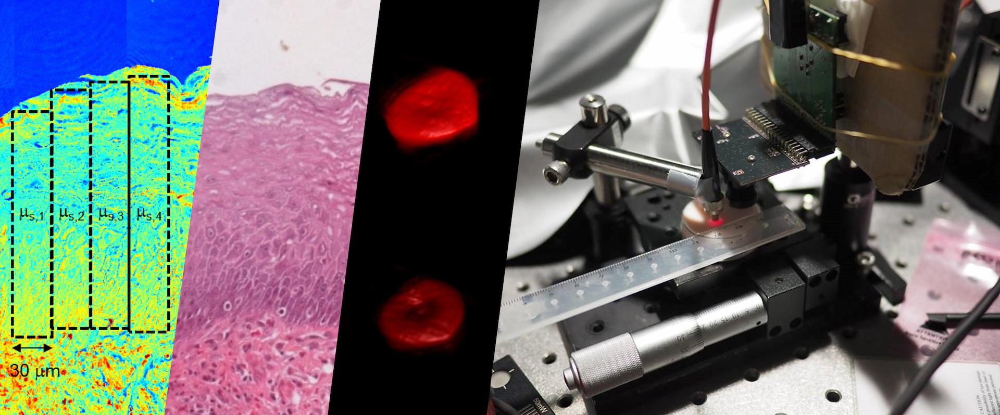
研究主題
生醫工程、生醫光電
關於實驗室
我們實驗室的研究方向是以光學方法來觀察生物組織、細胞與分子，主要分為各種光譜的分析以及光學影像系統的應用，以期對生物醫學領域的研究有所助益，並開發新的輔助醫學診斷的工具。長期的目標是針對疾病（特別是癌症）的早期徵兆，發展低侵入性的診斷儀器系統。
給未來的學生
我很尊重學生的意願與想法，也很鼓勵學生作自己有興趣的題目，相對的，也希望學生能夠主動地學習，並且在這裡建立起獨立思考與處理事情的能力。如果你對於自己的興趣還不是非常清楚，我們這裡有很多不同的 projects ，你也可以先跟著學長姊從做中學。另外由於我們實驗室需要的專業能力相當的廣，因此實驗室是由大學 不同主修的學生組成，特別適合勇於接受新事物的同學，也歡迎所有有志於投入生醫光電領域研究的同學加入我們的行列。
Research
● Publications:
光學量測技術具有非（低）侵入性之優點，加上近年消費電子產品的快速發展與龐大需求，使關鍵光電元件如雷射、LED 與數位相機等之性能持續提升且成本大幅下降，故非常適合應用在活體疾病診斷、定點照護 (point of care) 乃至於穿戴式裝置 24 小時連續監測等臨床與健康照護應用。我們實驗室的研究主軸是精進光學檢測與影像技術，並應用於非侵入性輔助疾病診斷與生理參數監測之儀器開發。此外，近年來個人電腦的圖形處理單元 (GPU) 運算能力大幅增長，我們運用機器學習技術，加速從測量的信號與影像中擷取有助於疾病診斷或是重要生理相關之參數，使多項前所未有的臨床或保健應用目標得以逐步實現。
Optical techniques have been increasingly applied to non-invasive screening and diagnosis of diseases, as well as monitoring and surveillance of physiological states of tissue in vivo. Thanks to the fast-growing demands and developments of consumer electronics, key optical components such as lasers, LEDs, and digital cameras have been improving in performance at affordable costs. This trend leads to new applications in point-of-care and wearable devices for health care. The research focus in our laboratory is to push forward sensitive optical detection and imaging techniques to aid the development of non-invasive tools for disease diagnosis/screening and continuous monitoring of important physiological parameters. In addition, with parallel computing power continuously boosted by graphics processing units (GPUs), we have been applying machine learning techniques to speed up extracting diagnostically useful and physiologically relevant information from measured signals. These efforts have been yielding promising results toward realizing various unprecedented clinical or health-promotion applications.
功能性近紅外光譜術 fNIRS
Functional near-infrared spectroscopy (fNIRS)
功能性近紅外光譜術 (Functional near-infrared spectroscopy, fNIRS) 是⼀種非侵入性的光學量測技術，其原理是光⾏經組織時，因組織吸收特性的改變，造成光在組織內的衰減之變化。此時以 650 nm ⾄ 950 nm 波段的近紅外光打入組織並在組織表⾯測量漫反射光的光譜強度，來量化局部組織吸收特性的改變。上述波段的近紅外光能穿透⾄大腦皮質，由於帶氧與不帶氧⾎紅素為腦組織在此波段主要的吸收源，且兩者的吸收光譜有明顯差異（如圖⼀），故可⽤於量化⼤腦局部區域帶氧及不帶氧⾎紅素濃度的變化。相較於功能性磁振造影 (functional magnetic resonance imaging, fMRI)，fNIRS 優點為造價相對低得多、時間解析度⾼、可於開放環境做測量且可同時測得帶氧⾎紅素與不帶氧⾎紅素的濃度變化。
Functional near-infrared spectroscopy (fNIRS) is a non-invasive optical measurement technique. The principle of this technology is based on the absorption and scattering of light as it passes through brain tissue, resulting from the varying absorption and scattering characteristics of the human tissue. In short, we shine light into the tissue, measure it after it passes through and then use an appropriate model to interpret the difference between the incident and detected light. The absorption characteristics of human tissue can be reconstructed by measuring the spectrum of reflected light. We utilize near-infrared light in the wavelength range of 650 nm to 950 nm, which can penetrate into the gray matter (the superficial layer of the human brain). Due to the fact that oxygenated and deoxygenated hemoglobin are the primary absorbers of near-infrared light in brain tissue and they have distinct absorption spectra (shown in figure 1), fNIRS can be used to quantify changes in the concentrations of oxygenated and deoxygenated hemoglobins in local brain regions. In comparison to functional magnetic resonance imaging (fMRI), fNIRS has advantages including lower instrumental cost, higher temporal resolution, higher portability, and the capability of measuring concentration changes of both oxygenated and deoxygenated of hemoglobins.
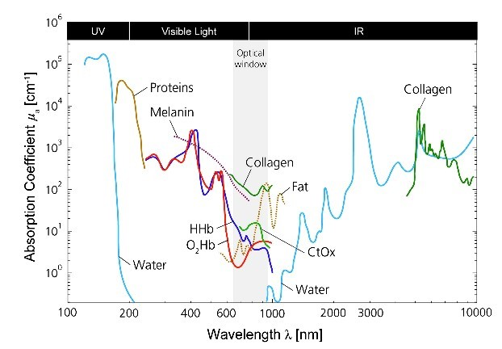
圖⼀、⾎紅素及其他組織吸收物之吸收光譜
Figure 1. The absorption spectroscopy of hemoglobin and other tissue absorbers
通過實驗室設計的認知實驗（如圖⼆）引發神經活動時，腦部神經細胞需要氧氣和葡萄糖來提供細胞能量，這些物質係通過⾎液供應，因此神經活化局部大腦區域的帶氧⾎紅素與總血紅素濃度會增加，而帶氧⾎紅素可以⽤作非侵入性研究腦功能區域的指標。
During cognitive activities such as those performed in the laboratory (shown in figure 2), neurons are activated and require oxygen and glucose to provide additional energy to generate action potentials. Since the source of energy is delivered through the blood, both the concentrations of oxygenated hemoglobin and total hemoglobin in the local brain region increase. Therefore, oxygenated hemoglobin can serve as an indicator for studying brain functional areas non-invasively.
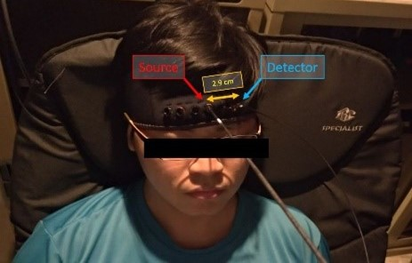
圖二、健康受試者進⾏ Stroop task
Figure 2. A healthy participant is performing Stroop task
在此研究主題，我們的⽬標是開發更精準的儀器並配合頭部結構建立光學模型與數值模擬⼯具，定量並定位⼤腦⽪質神經激活的程度與區域。其創新與進步性除了⼀般⾎液動⼒學上的特徵（腦部組織的帶氧⾎紅素與不帶氧⾎紅素的濃度變化），我們還利⽤實驗室長久以來開發的技術優勢，以測量並分析寬頻光譜的⽅式，嘗試量化細胞有氧呼吸以產⽣能量的關鍵分⼦細胞⾊素 c 氧化脢 (cytochrome c oxidase, CCO) 之氧化態濃度變化（如圖三）。
In this research, our goal is to build a broadband near-infrared spectroscopy system and develop numerical simulation models based on human head structures. This allows us to quantify the degree of activation more precisely. In addition to the conventional hemodynamic features (i.e., changes in the concentrations of oxygenated and deoxygenated hemoglobins in brain tissue), we aim to measure and analyze broadband spectra to quantify changes in the concentration of the oxidized cytochrome c oxidase (CCO), a key molecule in cellular aerobic respiration for energy generation during neural activations (shown in figure 3).
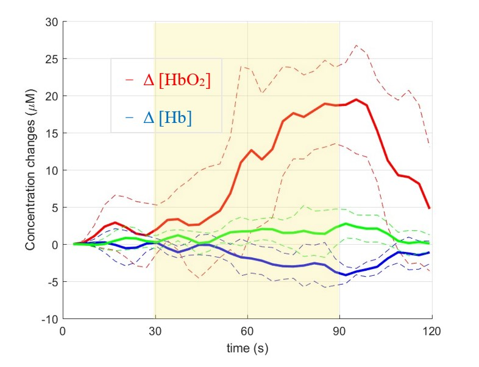
圖三、fNIRS 量測到的紅⾎球濃度變化
Figure 3. Changes in concentrations of oxygenated and deoxygenated hemoglobin and oxidized CCO
利用經顱紅外光刺激提升年長者認知功能
Transcranial infra-red light stimulation (TILS) for enhancing cognitive functions in the elderly population
我們團隊與德州大學奧斯汀分校學者合作研究經顱紅外光刺激 (TILS) 提升高齡族群認知功能。我們不止針對因正常老化造成認知功能衰退的高齡者，也針對被視為阿茲海默症主要風險因子的輕度認知功能障礙者 (mild cognitive impairment) 進行研究。有數個研究使用 TILS 針對年輕的健康成年人、以及具有主觀記憶抱怨 (subjective memory complaints) 的年長受試者照射前額葉後發現能提升其認知能力。但是目前沒有非侵入式的方法量化抵達接受刺激的目標腦區的光子能量，故無法針對 TILS 的劑量做最佳化。本團隊透過量化頭部組織的散射及吸收係數幫助預測 TILS 穿透至大腦目標腦區的能量。
We have been collaborating with researchers at The University of Texas at Austin on using TILS to enhance the cognitive functions of the elderly population. We target not only older people undergoing normal age-related cognitive decline but also those with signs of mild cognitive impairment, which is a major risk factor for Alzheimer’s disease. TILS has been applied to the prefrontal cortex and has shown improved cognitive functions in healthy young adults and older participants with subjective memory complaints. However, there is no non-invasive method to quantify the photon energy at the target brain region, hindering the optimization of TILS. Quantifying the scattering and absorption coefficients of tissue compartments in the head helps predict TILS energy penetrating to the target region in the head.
量化頭部主要組織區域之光學參數
Quantifying optical properties of main tissue compartments in the head
我們持續開發以非侵入性方法，利用近紅外光波長範圍 (700-900 nm) 的多通道漫反射光譜，量化頭部主要組織區域（包括頭皮、顱骨和灰質）的散射和吸收係數。本技術除了有助於預測上述腦部區域受到經顱紅外光刺激 (TILS) 的光源能量穿透情況，光學特性的量化還可以幫助對頭部非侵入性反射光譜測量進行建模和分析，例如量化腦組織血氧飽和度，以及在腦部功能活動期間量化局部腦區域帶氧血紅素和不帶氧血紅素濃度的相對變化等。
We have been developing non-invasive methods to quantify the scattering and absorption coefficients of main tissue compartments in the head in-vivo, including the scalp, skull, and gray matter. The technique is based on multi-channel reflectance spectroscopy in the near-infrared wavelength range of 700-900 nm. In addition to helping predict TILS energy penetrating to the brain as mentioned above, quantification of the optical properties could aid the modeling and analysis of non-invasive reflectance measurements on the head, such as quantifying tissue oxygen saturation in cerebral oximetry and quantifying relative changes in oxyhemoglobin and deoxyhemoglobin concentrations in local brain regions during functional activities of the brain (fNIRS).
從組織表面量測到的漫反射光譜定量組織光學參數一般稱為逆向問題。本研究使用蒙地卡羅法，在 3D 頭部組織模型中，輸入各組織光學參數，模擬光源照射前額經組織散射與吸收等效應後返回組織表面的漫反射光能量比例，稱為順向模型。取得活體漫反射光譜後，透過輸入光學參數組合至順向模型以輸出模擬之漫反射光譜，並採用疊代式曲線擬合計算模擬值和實際測量值之間的誤差作為損失函數，直到損失函數到達收斂條件時，該組光學參數組合即為最佳解。如圖一左所示，以磁振造影技術 (magnetic resonance imaging, MRI) 擷取健康自願參與研究者之頭部 3D 影像並切分成 5 種主要組織（如圖一右）。本研究事先以大量光學參數組合進行模擬以建立輸入為光學參數組合、輸出為漫反射光強的人工神經網路 (ANN) 取代蒙地卡羅順向模型，以加速逆向求解問題。為評估實驗誤差可能造成的影響，將模擬光譜加入雜訊（基於活體實驗之變異），進行疊代式曲線擬合以評估定量光學參數之誤差，擬合之光譜呈現於圖二，此方法在淺層組織光學參數定量上誤差約可達到 15%。
Quantifying tissue optical parameters from measured diffuse reflectance spectra at the tissue surface is generally referred to as an inverse problem. In this study, the Monte Carlo method was used within a 3D head tissue model. Various tissue optical parameters were input into the model to simulate the proportion of diffuse reflectance energy returned from the tissue surface after experiencing scattering and absorption effects during illumination by a light source, creating a forward model. After acquiring in-vivo diffuse reflectance spectra, the input optical parameter combinations were applied to the forward model to output simulated diffuse reflectance spectra. Iterative curve fitting was then employed, where the error between the simulated and measured values was used as the loss function. The process continued until the loss function reached a convergence condition, determining the optimal optical parameter combination. As illustrated in the left panel of Figure 1, 3D images of participants' healthy heads were acquired using magnetic resonance imaging (MRI) and segmented into five major tissues, as depicted in the right panel of Figure 1. In advance, this study simulated a set of optical parameter combinations to establish an artificial neural network (ANN), which takes optical parameter combinations as input and diffuse reflectance intensity as output, replacing the Monte Carlo forward model to expedite the solution of the inverse problem. To assess the impact of potential experimental errors, simulated spectra were subjected to noise (based on variations observed in in-vivo experiments) and were iteratively curve-fitted to evaluate errors in the quantification of optical parameters. The fitted spectra are presented in Figure 2, and this method yields an error of approximately 15% in quantifying optical parameters for superficial tissues.
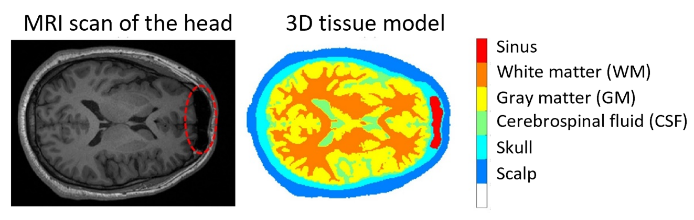
圖一、將 MRI 頭部影像基於強度灰階值切分成不同種類的組織，如頭皮、頭骨、腦脊髓液、灰質、白質及額竇。
Figure 1. Segmentation of MRI head image into different types of tissues such as scalp, skull, cerebrospinal fluid, grey matter, white matter and sinus based on intensity grey scale values.
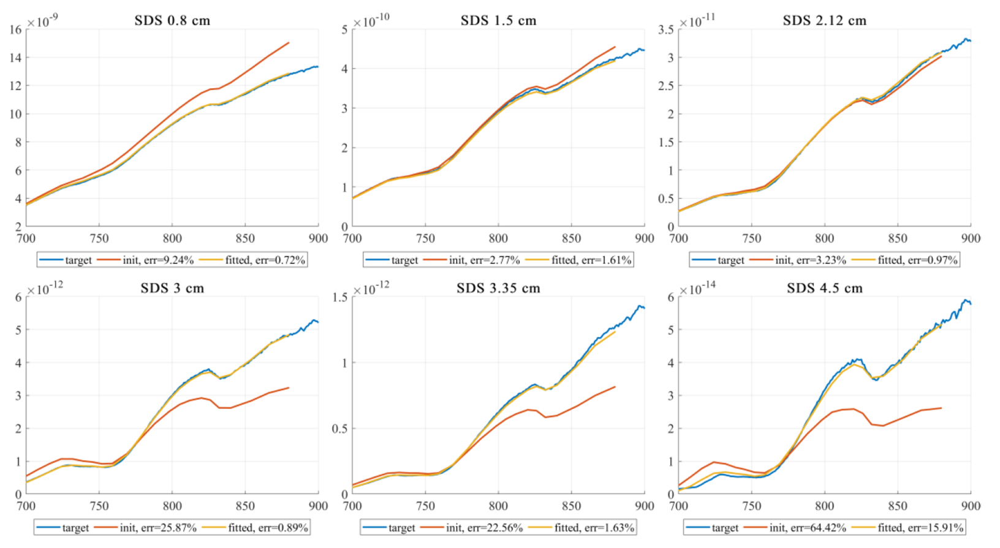
圖二、各光源-偵測器距離 (SDS) 下的模擬光譜加入雜訊後，在預先使用多組光學參數組合下的模擬光譜所建立的選擇池中，以和目標光譜誤差最小的光譜對應之光學參數做為初始值進行曲線擬合，圖中可見擬合得到的光譜較初始光譜更貼近目標光譜。
Figure 2. After adding noise to the simulated spectra at various source-detector distances (SDS), a selection pool was created using the simulated spectra generated with multiple sets of optical parameter combinations. From this pool, the spectrum with the smallest error compared to the target spectrum was selected, and its corresponding optical parameters were used as initial values for curve fitting. As depicted in the figure, the fitted spectra closely resemble the target spectra, demonstrating that the curve fitting process effectively refines the initial spectra from the selection pool.
實際實驗將光纖探頭放置於額頭，取得各光源－偵測器距離之漫反射光，如圖三、圖四所示，並同樣進行曲線擬合（圖五），以得到對應之光學參數最佳解。然而，較深層組織如大腦因靈敏度較差導致定量誤差較大，故如下方進行中的專案中所提及，目前本實驗室嘗試開發時域解析漫反射光譜技術，期望能增加深層組織之靈敏度。
In in-vivo experiments, optical fiber probes are placed on the forehead to obtain diffuse reflectance spectra at various source-detector distances, as shown in Figures 3 and 4. Similarly, a curve fitting process was applied (Figure 5) to obtain the optimal solution for the corresponding optical parameters. However, for deeper tissues such as the brain, the quantification error is larger due to lower sensitivity. As mentioned in the ongoing project below, our laboratory is currently working on the development of time-resolved diffuse reflectance techniques with the aim of enhancing the sensitivity for deeper tissues.
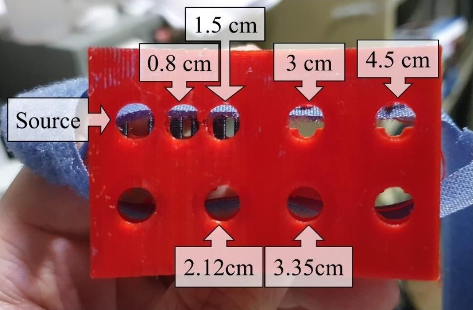
圖三、使用之光源-偵測器距離
Figure 3. Source-detector distances used
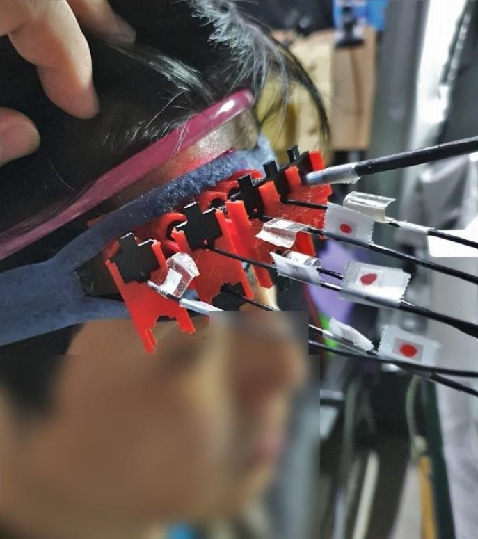
圖四、光纖探頭放置於額頭
Figure 4. Optical fiber probes placed on the forehead
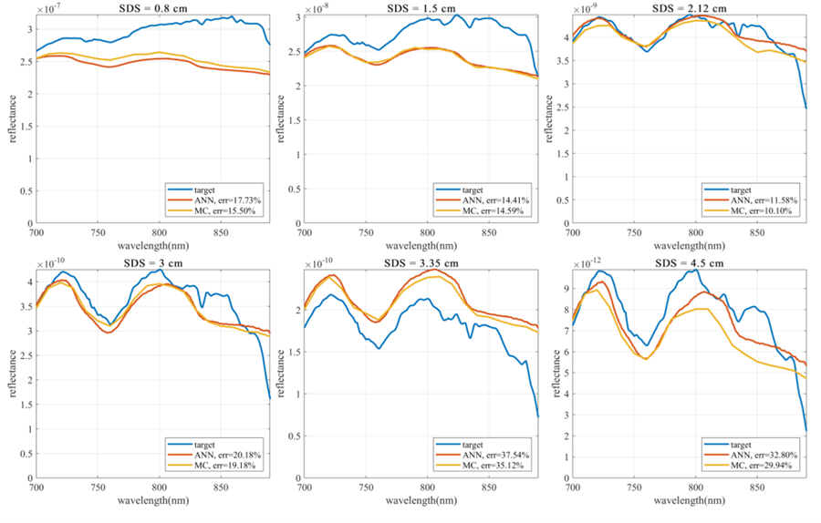
圖五、將活體量測得到的光譜以 ANN 做為順向模型進行曲線擬合，並使用蒙地卡羅法模擬擬合得到的光學參數，可見 ANN 光譜與模擬光譜的趨勢及和目標光譜的誤差都非常接近。
Figure 5. The spectra obtained from the in-vivo measurements are curve-fitted using ANN as a forward model, and the optical parameters obtained are simulated using the Monte Carlo method. It can be seen that the trend of the ANN spectra and the simulated spectra is similar, and the error to target spectra is close.
進行中的專案：
- 開發深度學習模型，從頭皮表面的非侵入性漫反射光強度測量值，預測到達目標組織（大腦皮質層）的照射能量的比例。
- 開發時域解析 (Time-resolved, TR) 漫反射光譜技術，以增加對更深部組織區域（如大腦）的觀察靈敏度。這種 TR 方法將與我們之前建立的連續波 (Continuous-wave, CW) 方法結合，以提高量化組織光學特性的準確性。我們預期在認知任務期間能獲得生理上重要的參數，例如神經活化腦部區域的血氧飽和度和血流指數的動態。
Ongoing projects:
- Developing a deep-learning model to predict the fraction of illumination energy that reaches the target tissue (cerebral cortex) from non-invasive reflectance spectra measurements at the scalp surface.
-
Developing time-resolved (TR) diffuse reflectance techniques to increase the sensitivity to deeper tissue regions such as the brain. This TR method will be combined with our previously established continuous-wave (CW) method to improve the accuracy of quantifying tissue optical properties. We expect to obtain physiologically essential parameters such as dynamics of oxygen saturation and blood flow index of cerebral regions during cognitive tasks.
以非侵入式光學技術評估經顱紅外光刺激 (TILS) 對年長者認知功能變化的成效
Non-invasive evaluation of the effects of transcranial infrared light stimulation (TILS) on cognitive functions of elderly people
本計畫招募 65-80 歲的健康受試者使用 810 nm 的發光二極體 (LEDs) 照射受試者前額，並使用電腦化的卡片分類 (CST) 測驗以及樣本延遲配對 (DMS) 測驗等認知作業評估受試者進行 TILS 前後的認知功能變化。為了探究認知功能變化與大腦能量代謝之相關性，我們使用功能性近紅外光譜術 (fNIRS) 在受試者進行認知作業時同步定量大腦組織血液動力學反應以及有氧呼吸關鍵酵素的氧化狀態變化。
This project plans to recruit healthy participants aged 65-80 years old, shine the light from 810 nm light-emitting-diodes (LEDs) to the forehead of the participants, and evaluate the cognitive functions of the participants by computerized card sorting test (CST) and delayed match-to-sample (DMS) test before and after TILS. To investigate the correlation between cognitive enhancements and the brain’s energetic processes, such as the hemodynamic response and oxygen metabolism, we will apply functional near-infrared spectroscopy (fNIRS) during cognitive tests.
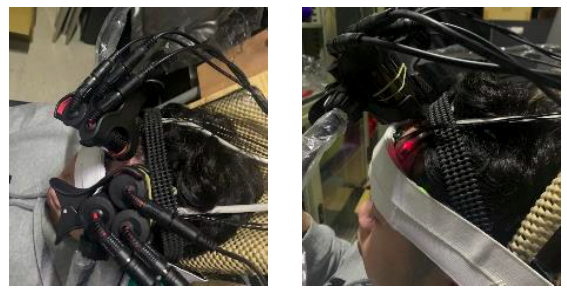
受試者實際前額照光圖。刺激光源使用一組三顆 810 nm 的 LEDs 光源，分別在額頭左右邊（接近 fp1 和 fp2 的位置）各放置一組。
Figure 1. The image of the TILS experiment with 2 pairs of 810nm LEDs as the light source which are put at Electroencephalography (EEG) spots (fp1 and fp2). Each pair of LEDs has three 810 nm LEDs.
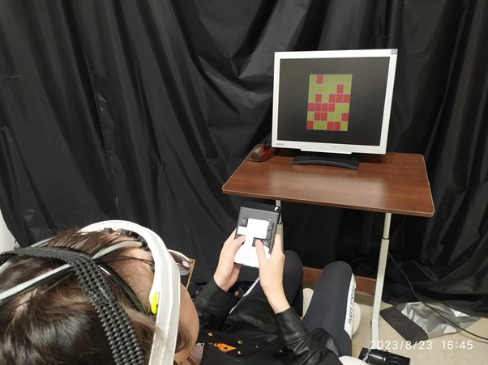
圖二、受試者進行認知任務並接受 fNIRS 測量的示意圖。黑色的偵測載具與受試者頭部組織接觸，並且利用三層綁帶使其更好貼合並避免相對位移。圖中認知測驗為 DMS 題目，受試者會手持對應的鍵盤進行作答。
Figure 2. The schematic diagram of subject doing cognitive tasks while measuring fNIRS. The black probes contact directly with the skin of the subject’s head, and we use 3 different ties to make the probes fitter with tissues and avoid relative displacement. The cognitive test in the figure is DMS. Subject will hold a specific keyboard while answering the questions.
內頸靜脈血氧儀
Venous oximeter - internal jugular vein (IJV)
我們近期在開發一款能以非侵入方式操作，且能連續監測內頸靜脈血氧飽和度 (blood oxygen saturation of the internal jugular vein, SijvO2) 的血氧儀，也計劃探討其可能的臨床應用。在多數醫療場域，脈搏血氧儀已被廣泛且例行性用於動脈血氧檢查，卻無法藉其得知區域組織的氧氣供給與使用狀態。若要獲得如腦部組織的用氧狀況，常規做法是將心導管插入上腔靜脈，以準確測量中央靜脈血氧飽和度 (ScvO2)。因為內頸靜脈 (internal jugular vein, IJV) 蒐集大部份由大腦回流的血液，因此其血氧飽和度與腦組織血氧飽和度具高度相關性，再搭配動脈血氧飽和度，便可得知腦部用氧狀態。此研究著重開發的非侵入與連續監測 SijvO2 功能，能更廣泛地用於如觀察重大手術中或重症病患的腦部組織灌流與血氧穩定性。
We are developing an oximeter for non-invasive and continuous measurements of the internal jugular venous oxygen saturation (SijvO2), and plan to investigate potential clinical values of such an oximeter. Pulse oximeters have been widely and routinely used in clinics to measure the oxygen saturation of arterial blood. However, they do not provide information about oxygen usage at regional tissue sites. On the other hand, central venous oxygen saturation (ScvO2) measured invasively through a catheter from blood at the superior vena cava is a valid and frequently used parameter for the clinical optimization of tissue oxygen supply. Since the internal jugular vein (IJV) collects blood from most of the brain, its oxygenation level provides invaluable information about the usage of oxygen by the brain. Non-invasive and continuous measurements of SijvO2 may provide additional and helpful information in a broad patient population for monitoring the instability of tissue perfusion or cerebral oxygenation, which are not uncommon for patients undergoing major surgeries and critically ill patients.
在先前研究中，我們嘗試在 IJV 上方的皮膚測量近紅外光漫反射光譜 (diffuse reflectance spectra in near-infrared wavelengths)，非侵入定量 SijvO2 的變化 (ΔSijvO2)。目前，因使用類神經網路 (artificial neural networks, ANNs) 分析能達到一般化、即時監測與資料處理快速等效果，我們便著重使用 ANN 分析 SijvO2。我們 ANN 模型的輸入是漫反射光譜，輸出為 ΔSijvO2。截至現在，我們表現最好的 ANN 模型，其均方根誤差 (RMSE) 能低至 1.28%。
In previous research projects, we attempted to non-invasively quantify changes in SijvO2 (ΔSijvO2) from diffuse reflectance spectra in near-infrared wavelengths measured at the skin above the IJV. Currently, our emphasis is on exploring the application of Artificial Neural Networks (ANNs) due to the potential of generalization, real-time monitoring, and data processing speed, among other advantages. To train our ANN prediction model, we input diffuse reflectance spectra obtained with Monte Carlo simulations as the input and output the change in oxygen saturation (ΔSijvO2). As of now, the initial results show that our model has achieved a root-mean-square error (RMSE) of 1.28%.
 圖一、IJV 漫反射光譜量測架構
圖一、IJV 漫反射光譜量測架構
Figure 1. The schematic of in-vivo measurement
 圖二、模擬流程如下：以由超音波影像建立的三維組織模型進行 Monte Carlo 模擬
圖二、模擬流程如下：以由超音波影像建立的三維組織模型進行 Monte Carlo 模擬
Figure 2. The simulation process is outlined as follows: Initially, we construct a 3D numerical model based on ultrasound images. Subsequently, we utilize Monte Carlo simulations with this geometric structure to model photon energy propagation in tissue and obtain the reflectance collected by the detector.
 圖三、ANN 模型表現
圖三、ANN 模型表現
Figure 3. The preliminary result of our ANN prediction model performance
可見光漫反射光譜技術
Diffuse reflectance spectroscopy (DRS) using visible light
我們實驗室持續在開發用於量化人體各器官組織（如皮膚、口腔與子宮頸等處）的活體光散射係數和吸收係數的技術。這些表層組織區域的光學特性可以作為組織病變前期的特徵，並有助於提取關鍵的生理參數。實驗室的相關研究主題包括：
We have been developing techniques to quantify human tissue’s optical scattering and absorption coefficients in-vivo at various organ sites, including the skin and mucosae in the oral cavity and uterine cervix. These superficial tissue regions’ optical properties can serve as biomarkers for precancerous changes in the tissue sites and facilitate the extraction of critical physiological parameters. Examples of previous research topics include:
提取子宮頸特定層的固有螢光以輔助檢測子宮頸癌前病變
Extraction of layer-specific intrinsic fluorescence from in-vivo measurements on the uterine cervix to aid detection of precursors of cervical cancer
實驗室建立了一套移動式的多通道反射和螢光光譜系統。我們根據上皮組織和結締組織（基質）構成的雙層組織開發了數值光子傳播模型。透過活體測量，測量到反射和螢光光譜，並通過調整模型中兩層組織的吸收係數、散射係數以及上皮厚度來匹配測量到的光譜。在兩層組織中，組織螢光物質的固有螢光不會受到組織的吸收和散射所影響，所以能夠大幅度提高估計時的準確度。根據分析活體光譜，我可以發現同一受試者的病變區域與其相鄰健康部位相比，癌前病變的子宮頸黏膜，其上皮／基質的螢光比率更高。藉此，我們可以進一步更準確地估計特定層的固有螢光以助於檢測子宮頸和其他區域（如口腔和食道黏膜）的癌前病變。此外，量化特定組織層的螢光的應用相當廣泛，例如在光動力療法或是腫瘤切除手術中可以用來確定目標組織的深度／位置。
We built a movable multi-channel reflectance and fluorescence spectroscopy system. We developed numerical photon propagation models in two-layered tissue consisting of an upper epithelial layer and underlying connective tissue (stroma). We conducted a human study to measure both reflectance and fluorescence spectra and fit the measured spectra by tuning the absorption and scattering coefficients of the two layers and the epithelial thickness in the model. Then, the intrinsic fluorescence of tissue fluorophores in the two layers, without effects of tissue absorption and scattering, has been estimated with greatly improved accuracy. Analyzing the in-vivo spectra showed a higher epithelial-to-stromal fluorescence ratio from precancerous cervical mucosa than from adjacent healthy sites in the same subjects. More accurate estimation of layer-specific intrinsic fluorescence could aid the detection of precancers in the cervix and other areas, including oral and esophageal mucosae. Moreover, quantifying tissue layer-specific fluorescence has broad applications, such as identifying target tissue depth/location in photodynamic therapy or tumor-removal surgery.
 圖一、在 12 名受試者中，除了編號 10 以外，所有屬於子宮頸上皮內瘤樣病變 (Cervical intraepithelial, CIN) 的點位均高於 2；四個非 CIN 點位的比率低於 2，顯示子宮頸癌前病變與 NADH 增加和膠原蛋白螢光貢獻降低有關，我們實驗室雙移動式的多通道反射和螢光光譜系統的結果與先前文獻一致。
圖一、在 12 名受試者中，除了編號 10 以外，所有屬於子宮頸上皮內瘤樣病變 (Cervical intraepithelial, CIN) 的點位均高於 2；四個非 CIN 點位的比率低於 2，顯示子宮頸癌前病變與 NADH 增加和膠原蛋白螢光貢獻降低有關，我們實驗室雙移動式的多通道反射和螢光光譜系統的結果與先前文獻一致。
Figure 1. Among the 12 subjects, all Cervical Intraepithelial Neoplasia (CIN) lesions, except for the one in subject 10, had a ratio greater than 2. The ratios of the four non-CIN sites were less than 2, indicating that the precancerous lesions of cervical cancer are associated with increased NADH and decreased contribution of collagen fluorescence. The results of our laboratory's movable multi-channel reflectance and fluorescence spectroscopy system are consistent with previous literature.
活體皮膚組織光學特性提取
Extraction of tissue optical properties of the skin in-vivo
我們建立了一個可攜式的反射光譜系統，由光纖探頭量測皮膚組織多個光源到接收器距離 (SDS) 的漫射反射光譜。再通過人工神經網絡 (ANN) 的組織光子傳播快速建模來估計表皮的黑色素密度、真皮層中膠原蛋白含量的變化，以及瘀傷中色素成分的相對比例，後者為與國立中央大學合作之研究。
We have built a portable reflectance spectroscopy system with fiber-optic probes to measure diffuse reflectance spectra from multiple source-to-detector distances (SDS) on the skin surface. With fast modeling of photon propagation in tissue based on artificial neural networks (ANN), we have developed techniques to estimate the melanin density in the skin, changes in the collagen content in the skin, and relative fractions of chromophores in bruises which is an ongoing collaborative study with researchers at National Central University, Taiwan.
 圖二 a、假設的三層皮膚模型，其中將上表皮層分為兩層，一層為不含黑色素的部分（主要由角質層、顆粒層及部分棘狀層組成），一層為含有黑色素的部分（主要由部分棘狀層及基底層組成），而第三層則為真皮層。
圖二 a、假設的三層皮膚模型，其中將上表皮層分為兩層，一層為不含黑色素的部分（主要由角質層、顆粒層及部分棘狀層組成），一層為含有黑色素的部分（主要由部分棘狀層及基底層組成），而第三層則為真皮層。
Figure 2a. Our three-layer skin model, in which the epidermis is divided into two layers, one without melanin (composed mainly of the stratum corneum, partial granular layer, and partial spinous layer) and one with melanin (composed mainly of partial granular layer, partial spinous layer, and basal layer), while the third layer is the dermis.
圖二 b、將光纖探頭放置在手臂拍攝光譜的實驗示意圖
Figure 2b. A photo of spectral acquisition on the arm with the fiber-optic probe
 圖三 a、將偵測光纖擺放距離光源不同遠處，以取得不同組織深度的資訊。
圖三 a、將偵測光纖擺放距離光源不同遠處，以取得不同組織深度的資訊。
Figure 3a. The detection fiber is placed at different distances from the light source to obtain information on different tissue depths.
圖三 b、本實驗室皮膚系統的光纖探頭也採用多個偵測光纖，並具有不同光源與偵測器距離 (source-detector distance, SDS) 測量空間分辨光譜 (spatially-resolved spectra)。
Figure 3b. The fiber-optic probe of our laboratory's skin system also uses multiple detection fibers and has different SDS measurements for spatially-resolved spectra.
 圖三 c、實際量測到的光譜（三個光譜分別為三個 SDS 的量測結果），並且使用蒙地卡羅光學模擬擬合。
圖三 c、實際量測到的光譜（三個光譜分別為三個 SDS 的量測結果），並且使用蒙地卡羅光學模擬擬合。
Figure 3c. The actual measured spectra (three spectra are the measurement results of three SDS) and fitting using Monte Carlo optical simulation.
Principal Investigator
實驗室主持人
宋孔彬 博士 (Kung-Bin Sung, Ph.D.)
現職
- 國立臺灣大學 電機工程學系 副教授
- 生醫電子與資訊學研究所 副教授
學歷
- Ph.D. Biomedical Engineering (2003) The University of Texas at Austin
- M.S. Biomedical Engineering (1999) The University of Texas at Austin
- B.S. Electrical Engineering (1996) National Taiwan University
經歷
- August 2014 - present
Associate Professor, National Taiwan University
- July 2006 - August 2014
Assistant Professor, National Taiwan University
- December 2003 - May 2006
Research Scientist, Intel Corporation (Seattle, WA, USA)
- January 1999 - November 2003
Graduate Research Assistant, The University of Texas at Austin (Austin, TX, USA)
- July 1996 - June 1998
Communication Officer, R.O.C. Army
主要研究領域
- 生醫工程 Biomedical engineering
- 生醫光電 Biophotonics
聯絡方式
個人簡傳
Dr. Kung-Bin Sung was born and grew up in Taipei, Taiwan. He received a Bachelor’s degree in Electrical Engineering from National Taiwan University in 1996. Then he joined the Army of R.O.C. and was commissioned a Second Lieutenant in communication.
After finishing the 2-year military service, he entered the University of Texas at Austin in 1998, majoring in Biomedical Engineering. He received M.S. and Ph.D. degrees in 1999 and 2003, respectively. His main research project as a Ph.D. student was developing a fiber-optic confocal microscope to obtain images of epithelial cells in-vivo for the diagnosis of early stages of cancer.
He joined Intel Corporation as a research scientist in 2003 and collaborated with researchers at the Fred Hutchinson Cancer Research Center in the United States on research projects related to surface-enhanced Raman spectroscopy. Since July 2006, he has been an assistant professor in the Department of Electrical Engineering and the Graduate Institute of Biomedical Electronics and Bioinformatics in National Taiwan University.
Alumni
博士班
| Name |
Topic/Education |
林仰賢
(2020 年畢業)
|
使用共光路斷層繞射顯微術之單細胞幾何與光學體積研究
國立臺灣大學 生醫電子與資訊所博士班
國立陽明大學 生物醫學影像暨放射科學所碩士
中國醫藥大學 生物醫學影像暨放射科學系學士
|
魏世忠
(2015 年畢業)
|
奈米金屬陣列侷域性電漿子螢光增強現象於生物分子交互作用即時偵測之應用
國立臺灣大學 生醫電子與資訊所博士班
陽明大學 生醫光電所碩士
陽明大學 醫事技術學系學士
|
蘇璟瑋
(2014 年畢業)
|
上皮細胞和組織的三維折射率與光學散射特性
國立臺灣大學 生醫電子與資訊所博士班
國立臺灣大學 電機工程學士
|
許瑋真
(2014 年畢業)
|
發展三維折射率顯微術應用於細胞內生物分子定量觀察與分析
國立臺灣大學 生醫電子與資訊所博士班
陽明大學 生醫光電所碩士
台北醫學大學 藥學系學士
|
廖克槃
(2013 年畢業)
|
高性能微奈米流體樣品濃縮晶片之研製與其生醫應用
國立臺灣大學 生醫電子與資訊所博士班
國立臺灣大學 生電機工程研究所碩士
高雄醫學大學 學士
|
曾德玉
(2011 年畢業)
|
多光譜影像系統於生物醫學之應用性
國立臺灣大學 生醫電子與資訊所博士班
陽明大學 生醫光電所碩士
陽明大學 醫事技術學士
|
碩士班
| Name |
Topic/Education |
許逸翔
(2023 年畢業)
|
內頸靜脈血氧儀之最佳光源-偵測器距離探討與潛在影響因子分析
國立臺灣大學 生醫電子與資訊所碩士班
國立陽明大學 生物醫學工程學系學士
|
孫欽鉉
(2023 年畢業)
|
代理模型加速蒙地卡羅模擬及類神經網路定量內頸靜脈血氧變化量
國立臺灣大學 生醫電子與資訊所碩士班
清華大學 生醫工程與環境科學系學士
|
蔡瑩儒
(2023 年畢業)
|
Electric Field Monte Carlo Simulation of Autofocusing Beams in Turbid Media
國立臺灣大學 生醫電子與資訊所碩士班
國立臺灣大學 電機工程學系學士
|
謝昕原
(2022 年畢業)
|
以近紅外光譜及類神經網路定量內頸靜脈血氧飽和度變化量
國立臺灣大學 生醫電子與資訊所碩士
國立陽明大學 生物醫學影像暨放射科學系學士
|
伍育汶
(2022 年畢業)
|
功能性近紅外光譜術應用於經顱紅外光刺激前後之認知功能評估
國立臺灣大學 生醫電子與資訊所碩士
高雄師範大學 工業科技教育學系學士
|
林國聖
(2022 年畢業)
|
雙層組織模型對定量子宮頸黏膜組織內在螢光特徵之影響
國立臺灣大學 生醫電子與資訊所碩士
國立中興大學 生命科學系學士
|
張祐祥
(2022 年畢業)
|
高通量免標定光學繞射斷層掃描術於紅血球三維型態之分析
國立臺灣大學 生醫電子與資訊所碩士
國立清華大學 生醫工程與環境科學系學士
|
張太睿
(2021 年畢業)
|
寬頻近紅外光譜與功能性磁振造影量測前額葉血液反應訊號進行比對分析
國立臺灣大學 生醫電子與資訊所碩士
國立陽明大學 醫學生物技術暨檢驗學系學士
|
潘韋翰
(2021 年畢業)
|
功能性近紅外光譜術測量經顱紅外光刺激以及延遲匹配樣本任務之吸收變化
國立臺灣大學 生醫電子與資訊所碩士
長庚大學 電機工程學系學士
|
蘇文偉
(2021 年畢業)
|
功能性近紅外光譜用於多層頭部組織模型的實驗驗證
國立臺灣大學 生醫電子與資訊所碩士
國立高雄應用科技大學 電機工程學系學士
|
高子佳
(2021 年畢業)
|
以連續波近紅外光譜與三維模型定量人體腦部光學參數
國立臺灣大學 生醫電子與資訊所碩士
國立臺灣大學 電機工程學系學士
|
陳胤甫
(2020 年畢業)
|
內頸靜脈血氧飽和度可攜式量測系統的開發與建立
國立臺灣大學 生醫電子與資訊所碩士
國立清華大學 生醫工程學系學士
|
林柏廷
(2019 年畢業)
|
利用定量相位顯微術判斷視網膜色素上皮細胞之細胞凋亡
國立臺灣大學 生醫電子與資訊所碩士
國立陽明大學 醫學生物技術暨檢驗學系學士
|
沈心柔
(2019 年畢業)
|
散射相位函數對子宮頸基質層組織模擬之影響
國立臺灣大學 生醫電子與資訊所碩士
國立清華大學 工科系學士
|
莫松恩
(2019 年畢業)
|
兩段式曲線擬合結合雙層組織模型定量子宫頸組織的內在螢光特徵
國立臺灣大學 生醫電子與資訊所碩士
國立臺灣大學 生化科技學系學士
|
塗是澂
(2019 年畢業)
|
利用多輸入神經網路及蒙地卡羅組織模型定量中央靜脈血氧飽和度
國立臺灣大學 生醫電子與資訊所碩士
國立中興大學 物理系學士
|
葉哲皓
(2019 年畢業)
|
非侵入式中央靜脈血氧飽和度量測系統之建構與實測
國立臺灣大學 生醫電子與資訊所碩士
國立中央大學 電機工程學系學士
|
林廷軒
(2018 年畢業)
|
以近紅外光譜系統定量仿體及人體頭部組織光學參數
國立臺灣大學 生醫電子與資訊所碩士
高雄應用科技大學 電機工程系學士
|
詹朝舜
(2018 年畢業)
|
以逆向白蒙地卡羅法分析模擬資料及人體大腦實驗尋找功能性近紅外線光譜技術之最佳化波長組合
國立臺灣大學 生醫電子與資訊所碩士
國立臺灣大學 電機工程學系學士
|
王巧懿
(2018 年畢業)
|
修正式蒙地卡羅逆向擬合模型於活體漫反射光譜研究:人體皮膚組織
Bioengineering, University of Maryland 博士班
國立臺灣大學 生醫電子與資訊所碩士
國立臺灣大學 電機工程學系學士
|
林豐正
(2017 年畢業)
|
利用三維折射率顯微術與逆散射光譜區分白血球種類
國立臺灣大學 生醫電子與資訊所碩士
國立臺灣大學 工程科學及海洋工程學系學士
|
俞婷文
(2017 年畢業)
|
以空間暨頻譜解析漫反射光譜學技術定量中央靜脈血氧飽和濃度：模擬及仿體實驗研究
國立臺灣大學 生醫電子與資訊所碩士
國立臺灣大學 工程科學及海洋工程學系學士（光機電組）
|
黃贊學
(2017 年畢業)
|
利用臨床移動式漫反射光譜系統定量子宮頸癌前病變之組織光學參數
國立臺灣大學 生醫電子與資訊所碩士
高雄應用科技大學 電機工程系學士
|
謝承志
(2016 年畢業)
|
拉曼光譜應用於大腸癌之分析與預測
國立臺灣大學 生醫電子與資訊所碩士
中央大學 電機工程學系學士
|
黃信祥
(2016 年畢業)
|
利用三維折射率顯微術應用於定量式分析海洋性貧血
國立臺灣大學 生醫電子與資訊所碩士
國立陽明大學 生物醫學影像暨放射科學系學士
|
葛凡華
(2016 年畢業)
|
蒙地卡羅於新型逆向擬合模型與活體漫反射光譜研究：口腔黏膜組織
國立臺灣大學 生醫電子與資訊所碩士
國立交通大學 光電工程學系學士
|
賴鈺銘
(2016 年畢業)
|
功能性近紅外線光譜技術中探頭擺放決策的模擬研究
國立臺灣大學 生醫電子與資訊所碩士
國立臺灣大學 電機工程學系學士
|
田耕豪
(2015 年畢業)
|
利用螢光蒙地卡羅模型建立螢光強度資訊表格定量雙層組織的螢光光學參數
國立臺灣大學 生醫電子與資訊所碩士
國立臺灣大學 機械工程學系學士
|
謝朝茂
(2015 年畢業)
|
三微折射率顯微鏡應用於定量式分析癌細胞之細胞週期與白血球分類
國立臺灣大學 生醫電子與資訊所碩士
國立陽明大學 生命科學系學士
|
蕭逸嫻
(2015 年畢業)
|
利用螢光光譜辨別黏膜癌前病變
國立臺灣大學 生醫電子與資訊所碩士
長庚大學 生物醫學影像暨放射科學系學士
|
莊閔傑
(2015 年畢業)
|
臨床移動式漫反射光譜系統之建構與實測
國立臺灣大學 生醫電子與資訊所碩士
國立中央大學 學士
|
陳慶安
(2015 年畢業)
|
利用三維折射率顯微術定量式分析紅血球細胞
國立臺灣大學 生醫電子與資訊所碩士
國立成功大學 系統及船舶機電工程學系學士
|
謝弘柏
(2014 年畢業)
|
以參數光譜性質建立由漫反射光譜提取黏膜組織參數之方法
國立臺灣大學 生醫電子與資訊所碩士
國立臺灣大學 電機工程學系學士
|
許芳瑋
(2014 年畢業)
|
以GPU加速蒙地卡羅演算法並分析漫反射和螢光光譜
國立臺灣大學 生醫電子與資訊所碩士
國立臺灣大學 電機工程學系學士
|
蘇鈺惠
(2013 年畢業)
|
利用移動式光譜系統進行漫反射光譜及螢光光譜之量測
國立臺灣大學 生醫電子與資訊所碩士
國立陽明大學 生物醫學影像暨放射科學系學士
|
蕭雅茵
(2013 年畢業)
|
全場光學同調顯微術(FF-OCM)之組織量測
國立臺灣大學 生醫電子與資訊所碩士
國立成功大學 物理學系學士
|
施光偉
(2013 年畢業)
|
移動式光學光譜系統架構
國立臺灣大學 生醫電子與資訊所碩士
國立臺灣大學 電機工程學系學士
|
黃振荃
(2012 年畢業)
|
脊椎組織拉曼頻譜分析
國立臺灣大學 生醫電子與資訊所碩士
|
劉彥麟
(2012 年畢業)
|
利用表面電漿共振感測微奈米濃縮晶片中的蛋白質免疫分析反應
國立臺灣大學 生醫電子與資訊所碩士
國立臺灣大學 電機工程學系學士
|
張智強
(2012 年畢業)
|
利用有限差分時域法來模擬正常細胞和病變細胞的細胞散射光
國立臺灣大學 生醫電子與資訊所碩士
國立臺灣大學 電機工程學系學士
|
陳錫勳
(2012 年畢業)
|
利用斜角光纖定量雙層組織的光學參數
國立臺灣大學 生醫電子與資訊所碩士
中央大電機工程學系學士
|
畢襄辰
(2012 年畢業)
|
移動式高光譜顯微影像系統之建構與實測
國立臺灣大學 生醫電子與資訊所碩士
國立陽明大學 生物醫學影像暨放射科學系學士
|
賴怡璋
(2011 年畢業)
|
上皮細胞之彈性逆散射光譜的量測與分析
國立臺灣大學 生醫電子與資訊所碩士
國立臺灣大學 生物環境系統工程學學士
|
李儀珊
(2011 年畢業)
|
利用傅立葉轉換式高光譜顯微影像系統進行口腔黏膜光學參數量測
國立臺灣大學 生醫電子與資訊所碩士
國立臺灣大學 生物產業機電工程學學士
|
張庭嘉
(2010 年畢業)
|
以信號與影像處理技術分析糖尿病患者之眼底影像以偵測無灌流區
臺北市立醫院陽明院區眼科醫師
國立臺灣大學 生醫電子與資訊研究所碩士
|
于念中
(2010 年畢業)
|
利用表面電漿共振感測微米流體晶片中的蛋白質免疫分析反應
中華電信
國立臺灣大學 生醫電子與資訊所碩士
國立臺灣大學 生物產業機電工程學學士
|
陳俊宇
(2010 年畢業)
|
運用高光譜影像系統量測組織仿體光學參數以及血氧濃度
工業技術研究院
國立臺灣大學 生醫電子與資訊所碩士
聯合大學 電機工程學士
|
吳政舉
(2009 年畢業)
|
金屬奈米粒子標記於 DNA 微陣列晶片應用
創見資訊
國立臺灣大學 生醫電子與資訊所碩士
國立臺灣大學 農業化學學士
|
劉俊佑
(2008 年畢業)
|
多變數曲線分析應用於混合光譜的分離
國立臺灣大學 醫學工程研究所博士班
國立臺灣大學 生醫電子與資訊所碩士
中山醫學大學 醫學影像技術學學士
|
賴柏禎
(2008 年畢業)
|
利用傅立葉轉換光譜影像技術快速測量金屬奈米粒子散射光譜
台灣積體電路製造股份有限公司
國立臺灣大學 生醫電子與資訊所碩士
中原大學 生物醫學工程學士
|
巢國山
(2008 年畢業)
|
利用一個脈衝波的有限差分時域法來模擬寬波長範圍的細胞散射光
仁寶電腦
國立臺灣大學 生醫電子與資訊所碩士
海洋大學 電機工程學士
|
留連晉
(2008 年畢業)
|
表面電漿共振感測系統應用於微奈米流體晶片之蛋白質檢測
國立臺灣大學 生醫電子與資訊所碩士
中原大學 生物醫學工程學士
|
專題生
| Name |
Topic/Education |
解淮清
(2023) |
Bioengineering, University of Washington 博士班
國立臺灣大學 生命科學系 電機工程學系（雙主修）
|
謝佑芃
(2021) |
Bioengineering, University of California - San Diego 博士班
國立臺灣大學 電機工程學系
|
劉若愉
(2021) |
Medical Physics, University of Wisconsin - Madison 博士班
|
黃映晨
(2018) |
多倫多大學 生物物理系學士
|
崔聖揚
(2017) |
Electrical and Electronics Engineering, Stanford University 碩士
國立臺灣大學 電機工程學士
|
吳奕萱
(2016) |
國立臺灣大學 電機工程學士
|
王貫蓁
(2016) |
使用蒙地卡羅法對colin27進行吸收與散射之重建
國立臺灣大學 電機工程學士
|
王巧懿
(2016) |
國立臺灣大學 電機工程學士
|
徐偉恩
(2008) |
國立臺灣大學 生命科學系學士
|
胡芳耀
(2006) |
利用寬頻光譜與表面電漿共振技術，架構蛋白質檢測系統
Biomedical Engineering, Duke University 博士
國立臺灣大學 電機工程學士
|
陳耿元
(98專題) |
細胞逆散射之光譜分析
Bioengineering program, Penn State University 博士
國立臺灣大學 生化科技學系學士
|
程子翔
(98專題) |
從金屬奈米粒子的光譜看氧自由基的攻擊效應
MIT/Harvard Health Sciences and Technology 博士
國立臺灣大學 電機工程學系
|
蕭宇珊
(98專題) |
Confocal microscope
Biomedical Engineering, University of California - Irvine
國立臺灣大學 電機工程學系
|
Members
博士班
| Name |
Topic/Education |
| 廖英淇
|
國立臺灣大學 生醫電子與資訊所博士班
逢甲大學 生醫資訊暨生醫工程碩士學位學程碩士班
|
| 邱千容
|
國立臺灣大學 生醫電子與資訊所博士班
國立臺灣大學 生醫電子與資訊所碩士班
中原大學 電機資訊學院學士班學士（主修通訊、經營管理）
|
碩士班
| Name |
Topic/Education |
| 李浩維
|
國立臺灣大學 生醫電子與資訊所碩士班
國立臺灣師範大學 電機工程學系學士
|
| 陳政霆
|
國立臺灣大學 生醫電子與資訊所碩士班
國立中央大學 電機工程學系學士
|
| 莊棨翔
|
國立臺灣大學 生醫電子與資訊所碩士班
國立臺灣大學 機械工程學系學士
|
| 林柏詠
|
國立臺灣大學 生醫電子與資訊所碩士班
國立中央大學 電機工程學系學士
|
| 楊 光
|
國立臺灣大學 生醫電子與資訊所碩士班
國立中央大學 生醫科學與工程學系學士
|
| 郭庭沂
|
國立臺灣大學 生醫電子與資訊所碩士班
國立陽明交通大學 生物醫學工程學系學士
|
| 王政陽
|
國立臺灣大學 生醫電子與資訊所碩士班
國立台灣科技大學 材料科學與工程學系
|
| 劉亭侑
|
國立臺灣大學 生醫電子與資訊所碩士班
國立成功大學 生物醫學工程學系
|
| 蔡亞樺
|
國立臺灣大學 生醫電子與資訊所碩士班
中國醫藥大學 生物醫學影像暨放射科學學系
|
| 羅佳蓉
|
國立臺灣大學 生醫電子與資訊所碩士班
國立陽明交通大學 生物醫學影像暨放射科學學系
|
專題生
| Name |
Topic/Education |
|
莊鳴鐸
|
國立臺灣大學 電機工程學系
|
|
鄭惠齡
|
國立臺灣大學 醫學工程學系
|
Courses
電機系複選必修
生醫工程（biomedical engineering）是一門跨領域的學門，主要是運用各種工程上的知識與技術，來協助進行生物相關的研究，以及在醫學上提供有助於診斷的資訊或是輔助疾病的治療。本課程由電機工程的基礎出發，簡介在生醫工程中較相關的主題，包含神經傳導與刺激、醫學影像、生醫感測、生物晶片、生醫信號的擷取與處理等。
大三大四研究所選修課
本課程在教授各種光譜及光學影像系統的基本原理、架構，以及其在生物醫學之應用。主要包含以下主題：
生醫光譜：（紫外 / 可見）吸收光譜，螢光光譜，振動光譜（紅外光譜，拉曼散射），光譜資料分析等。
生醫光學影像：顯微鏡成像原理，各種光學顯微鏡技術（phase contrast, darkfield, fluorescence, polarized light, DIC），共軛焦掃瞄顯微技術，光學同調斷層掃瞄。
生醫電子與資訊所碩士班必修
醫工導論之課程設計係以本組參與教師之研究領域與重點為基礎，兼顧醫工整體領域之發展需求規劃而成，側重於生醫電子相關課題，輔以重要分生生理等基礎知識，前半學期由生理分生開始後在製程、感測、電路與訊號方向上進行討論，後半學期在磁核共振、X 光斷層掃瞄、超音波與光學造影醫學影像儀器系統上進行討論。
研究所選修課
本課程之目的在於介紹各種光學方法應用於非侵入式醫療診斷尤其是癌症前期病變。主要內容分為以下三部分：
一、以數學及物理模型描述光在生物組織中的傳遞。
二、介紹 Monte Carlo 法的基本原理，以數值模擬光子在生物組織中的傳遞。
三、以文獻回顧的方式，介紹各種光譜技術是如何獲得與細胞或組織病變有關或是對診斷有幫助的資訊。
Contact
Thanks for filling out our form!
We will get back to you soon!
10617 台北市大安區羅斯福路四段一號 明達館 703 室 TEL: +886-2-3366-9600
Room 703, Ming-Da Hall, No.1, Sec.4, Roosevelt Road, Taipei, Taiwan (R.O.C) 10617